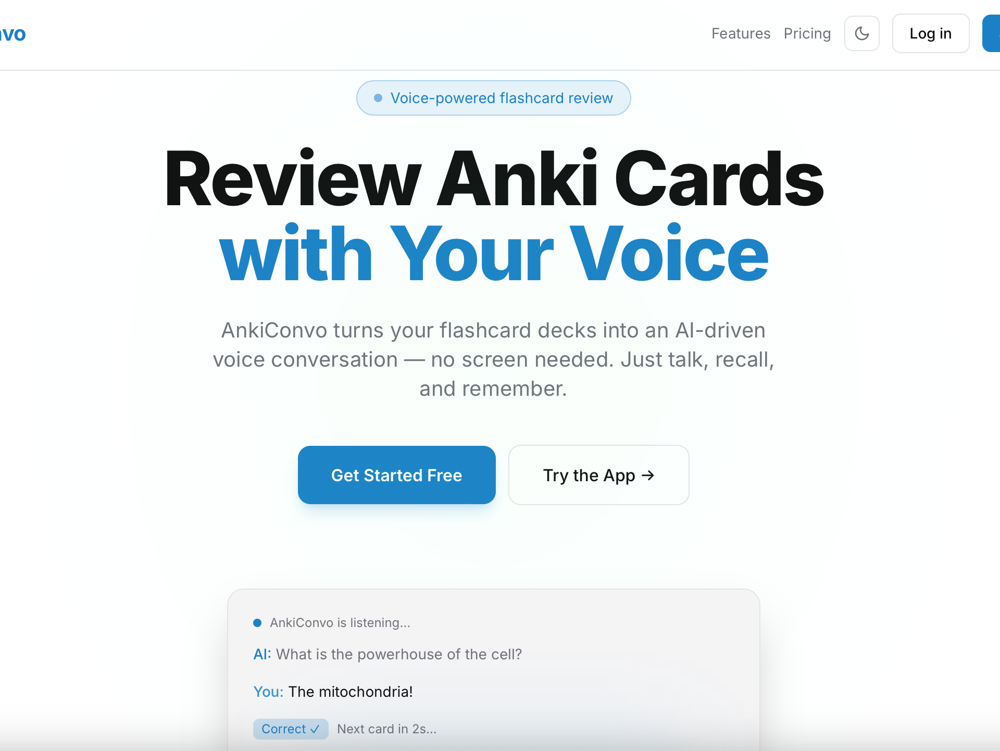

CREATED
← back to creationsankiconvo
tldr: landing page for app where you can chat with anki on the go; my teammates also hacked the ankiconvo chat app itself as well
impact: supporting the ankiconvo app, which helps make learning easier on the go

landing page →
github repo →
sundai card →